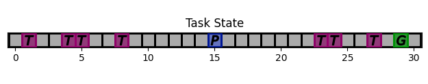
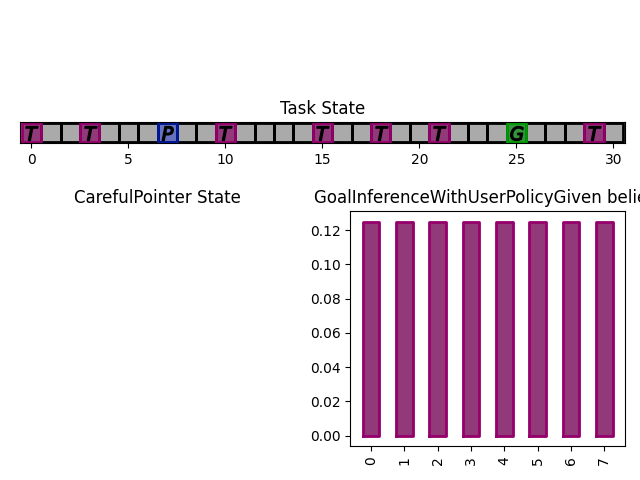
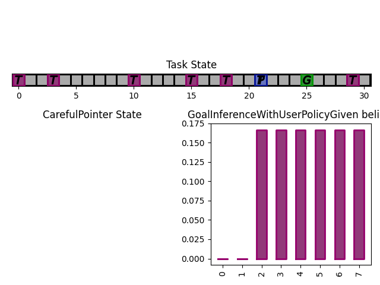

More Complex Example
In this example, we are going to build our first representation of an interactive system: we use a target-selection task, where the user’s objective is to select a particular target known as the ‘goal’, by positioning a cursor on top of the goal. The assistant can help the user, positioning the cursor anywhere inside a grid.
Task
We first build a simple 1D gridworld (below is what it should look like)
{kind=link}
The user goal is the green ‘G’, the current cursor position is the blue ‘P’ and the other targets are the purple ‘T’s. The cursor can go anywhere within this space.
To define a new task, we subclass InteractionTask and override the needed methods.
1class SimplePointingTask(InteractionTask):
2 """A 1D pointing task.
3
4 A 1D grid of size 'Gridsize'. The cursor is at a certain 'position' and there are several potential 'targets' on the grid. The user action is modulated by the assistant.
5
6 The task features two modes, 'position' and 'gain'. In position, the assistant directly specifies the position of the cursor. In gain mode, the cursor position is modulated by the assistant: position[k+1] = position[k] + user action * assistant_action
7
8 """
9
10 def __init__(self, gridsize=31, number_of_targets=10, mode="gain"):
11 super().__init__()
12 self.gridsize = gridsize
13 self.number_of_targets = number_of_targets
14 self.mode = mode
15 self.dim = 1
16
17 self.state["position"] = discrete_array_element(
18 low=0, high=gridsize - 1, out_of_bounds_mode="clip"
19 ) # position anywhere inside the grid
20
21 self.state["targets"] = discrete_array_element(
22 low=0, high=gridsize - 1, shape=(number_of_targets,)
23 ) # targets anywere inside the grid
24
25 def reset(self, dic=None):
26 """Reset the task.
27
28 Reset the grid used for rendering, define new targets, select a starting position
29
30 """
31
32 # select random targets
33 targets = sorted(
34 numpy.random.choice(
35 list(range(self.gridsize)),
36 size=self.number_of_targets,
37 replace=False,
38 )
39 )
40
41 # Define starting position, making sure not to start on a target
42 copy = list(range(self.gridsize))
43 for i in targets:
44 copy.remove(i)
45 position = int(numpy.random.choice(copy))
46
47 # actually assign position and targets to task
48 self.state["position"] = position
49 self.state["targets"] = targets
50
51 # For text render
52 self.grid = [" " for i in range(self.gridsize)]
53 for i in targets:
54 self.grid[i] = "T"
55
56 def on_user_action(self, *args, user_action=None, **kwargs):
57 """Do nothing, increment turns, return half a timestep
58
59 :meta public:
60 """
61 # Finish task if cursor on top of the goal
62 is_done = False
63 if (
64 self.state["position"] == self.bundle.user.state["goal"]
65 and user_action == 0
66 ):
67 is_done = True
68
69 return self.state, -1, is_done
70
71 def on_assistant_action(self, *args, assistant_action=None, **kwargs):
72 """Modulate the user's action.
73
74 Multiply the user action with the assistant action.
75 Update the position and grids.
76
77 :param assistant_action: (list)
78
79 :return: new state (OrderedDict), half a time step, is_done (True/False)
80
81 :meta public:
82 """
83 is_done = False
84
85 # Stopping condition if too many turns
86 if self.round_number >= 50:
87 return self.state, 0, True
88
89 # two modes
90 if self.mode == "position":
91 self.state["position"] = self.assistant_action
92 elif self.mode == "gain":
93
Synthetic User Model
We now define a user model, that we call CarefulPointer. To do so, we describe the 4 components of the CoopIHC BaseAgent: state, observation and inference engines, and policy.
1class CarefulPointer(BaseAgent):
2 """A user that only indicates the right direction, with a fixed amplitude, and with some error rate.
3
4 .. warning ::
5
6 This agent only works with a task that has a 'targets' substate.
7
8
9 * Reset: At each reset, it selects a new goal from the possible 'targets'.
10 * Inference: None
11 * State: None
12 * Policy: When sampled, the user will issue an action that is either +1 or -1 in the direction of the target.
13 * Observation: The user observes everything perfectly except for the assistant state.
14
15
16
17 :param error_rate: rate at which users makes errors, defaults to 0.05
18 :type error_rate: float, optional
19 """
20
21 def __init__(self, *args, error_rate=0.05, **kwargs):
22
23 self._targets = None
24
25 # Define action state of the agent ([-1,0,1])
26 action_state = State()
27 action_state["action"] = discrete_array_element(low=-1, high=1)
28
29 # Define Policy. Here we use a policy explicitly defined by a likelihood model (of the form p(action|observation) = x for each action). To do so, we use a ELLDiscretePolicy, and simply define the likelihood model (compute_likelihood). See ELLDiscretePolicy docs for more information
30 ELLD_dic = {"compute_likelihood_args": {"error_rate": error_rate}}
31 ELLD_dic.update(kwargs.get("policy_kwargs", {}))
32
33 agent_policy = ELLDiscretePolicy(
34 action_state=action_state,
35 **ELLD_dic,
36 )
37
38 def compute_likelihood(self, action, observation, *args, **kwargs):
39 error_rate = kwargs.get("error_rate", 0)
40 # convert actions and observations
41 goal = observation["user_state"]["goal"]
42 position = observation["task_state"]["position"]
43 # Write down all possible cases (5)
44 # (1) Goal to the right, positive action
45 if goal > position and action > 0:
46 return 1 - error_rate
47 # (2) Goal to the right, negative action
48 elif goal > position and action < 0:
49 return error_rate
50 # (3) Goal to the left, positive action
51 if goal < position and action > 0:
52 return error_rate
53 # (4) Goal to the left, negative action
54 elif goal < position and action < 0:
55 return 1 - error_rate
56 elif goal == position and action == 0:
57 return 1
58 elif goal == position and action != 0:
59 return 0
60 elif goal != position and action == 0:
61 return 0
62 else:
63 raise RuntimeError(
64 "warning, unable to compute likelihood. You may have not covered all cases in the likelihood definition"
65 )
66
67 # Attach likelihood function to the policy
68
69 agent_policy.attach_likelihood_function(compute_likelihood)
70
71 # ---------- Observation engine ------------
72 # Here, we use an engine that sees everything except the assistant state. See RuleObservationEngine documentation
73 observation_engine = RuleObservationEngine(
74 deterministic_specification=base_user_engine_specification,
75 )
76
77 # ---------- Calling BaseAgent class -----------
78 # Always call super().__init__() to attach all components to the agent.
79
80 super().__init__(
81 "user",
82 *args,
83 agent_policy=agent_policy,
84 agent_observation_engine=observation_engine,
85 **kwargs,
86 )
87
88 def finit(self):
89 # Select the goal. This has to be done during finit, otherwise, the task will not have the right targets yet.
90 self.state["goal"] = discrete_array_element(
91 low=0, high=(self.bundle.task.gridsize - 1)
92 )
93
94 @property
95 def targets(self):
96 # shortcut
97 return self.bundle.task.state["targets"]
98
99 def reset(self, dic=None):
100 # select a random target to be the goal
101 index = numpy.random.randint(0, self.targets.size)
102 self.state["goal"] = self.targets[index]
Notice that the code re-uses two existing classes: ELLDiscretePolicy and RuleObservationEngine. The hope is that in many cases, you can re-use existing CoopIHC objects rather than code everything from scratch.
Assistant
We are going to couple this operator with an intelligent assistant which leverages Bayesian Information Gain (BIG) [Liu2017]. This assistant follows two mechanisms:
It holds a belief vector, that assigns each target with a probability (namely the probability that that particular target is the user goal). This belief is maintained by a particular inference engine called
GoalInferenceWithUserPolicyGiven, which as the name suggests, is capable of updating the beliefs associated with each target by leveraging a user model.It maintains a policy, that at each step, puts the cursor in a position that is going to be maximally informative for the assistant. This policy is implemented as a
BIGDiscretePolicy.
1class BIGGain(BaseAgent):
2 def __init__(self):
3
4 super().__init__(
5 "assistant", agent_inference_engine=GoalInferenceWithUserPolicyGiven() #
6 )
7
8 def finit(self):
9 del self.policy.action_state["action"]
10 self.policy.action_state["action"] = discrete_array_element(
11 init=0,
12 low=0,
13 high=self.bundle.task.gridsize - 1,
14 out_of_bounds_mode="error",
15 )
16
17 user_policy_model = copy.deepcopy(self.bundle.user.policy)
18 agent_policy = BIGDiscretePolicy(self.policy.action_state, user_policy_model)
19 self._attach_policy(agent_policy)
20 self.inference_engine._attach_policy(user_policy_model)
21
22 self.state["beliefs"] = array_element(
23 init=1 / self.bundle.task.number_of_targets,
24 low=numpy.zeros((self.bundle.task.number_of_targets,)),
25 high=numpy.ones((self.bundle.task.number_of_targets,)),
26 out_of_bounds_mode="error",
27 )
28
29 def reset(self, dic=None):
30 self.state["beliefs"] = numpy.array(
31 [
32 1 / self.bundle.task.number_of_targets
33 for i in range(self.bundle.task.number_of_targets)
34 ]
35 )
36
37 # change theta for inference engine
38 set_theta = [
39 {
40 ("user_state", "goal"): discrete_array_element(
41 init=t, low=0, high=self.bundle.task.gridsize
42 )
43 }
44 for t in self.bundle.task.state["targets"]
45 ]
46
47 self.inference_engine.attach_set_theta(set_theta)
48 self.policy.attach_set_theta(set_theta)
49
50 def transition_function(assistant_action, observation):
51 """What future observation will the user see due to assistant action"""
52 # always do this
53 observation["assistant_action"]["action"] = assistant_action
54 # specific to BIGpointer
55 observation["task_state"]["position"] = assistant_action
56
57 return observation
58
59 self.policy.attach_transition_function(transition_function)
60
61 def render(self, mode="text", ax_user=None, ax_assistant=None, ax_task=None):
62 try:
63 self.inference_engine.render(mode="text", ax_assistant=ax_assistant)
64 except ValueError:
65 self.inference_engine.render(mode=mode)
Bundle
Now that all components are ready, we can bundle them together to evaluate this combination of user model and assistant.
1from coopihc import SimplePointingTask, CarefulPointer, BIGGain
2from coopihc import Bundle
3
4import matplotlib.pyplot as plt
5
6task = SimplePointingTask(gridsize=31, number_of_targets=8, mode="position")
7binary_user = CarefulPointer(error_rate=0.05)
8BIGpointer = BIGGain()
9
10bundle = Bundle(task=task, user=binary_user, assistant=BIGpointer)
11game_state = bundle.reset()
12# bundle.render("plot")
13# plt.tight_layout()
14k = 0
15# plt.savefig("/home/juliengori/Pictures/img_tmp/biggain_{}.png".format(k))
16while True:
17 game_state, rewards, is_done = bundle.step(user_action=None, assistant_action=None)
18 # bundle.render("plot")
19 k += 1
20 # plt.savefig("/home/juliengori/Pictures/img_tmp/biggain_{}.png".format(k))
21 if is_done:
22 bundle.close()
23 break
This assistant has very good performance (it should, we have given it the true user model, which is also really simple)
The figures below show a run, which finished in 3 steps with the task state as well as the assistant beliefs rendered.
 {kind=link}
{kind=link}


What next
The example that we have just seen is what you would expect from an early prototype. Several extensions and enhancements could follow:
You could use a more complex user model to pair with the assistant. For example, a visual search model could determine how the cursor is located after a ‘jump’, penalizing frequent and high amplitude jumps. A motor control model could determine how the cursor moves (e.g. fast initially, and much slower towards the end. To see such examples, head over to Modularity.
Alternatively, you could learn the user behavior for a given assistant policy, e.g. via Deep Reinforcement Learning. See Using Reinforcement Learning for an example.
You could tune the BIGGain assistant to account for the extra cost associated with jumps in the cursor.
You could look at the effect of model mismatch between the model handled by the BIGGain assistant and the synthetic user model
You could pair your assistant with a real user to evaluate its short term performance. See Interfacing CoopIHC with a real user for an example.
You could jointly train the user model and the assistant to simulate co-adaptation between a user and a tool.
- Liu2017
Liu, Wanyu, et al. “Bignav: Bayesian information gain for guiding multiscale navigation.” Proceedings of the 2017 CHI Conference on Human Factors in Computing Systems. 2017.